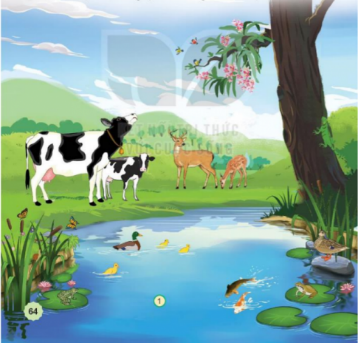
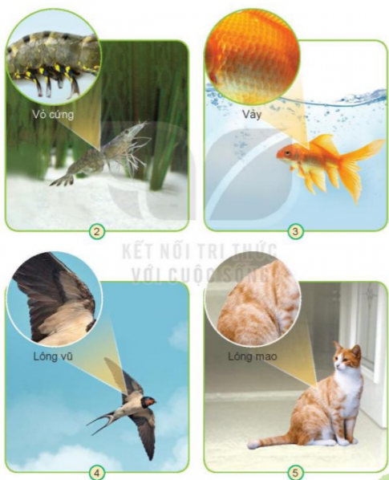

TỰ NHIÊN VÀ XÃ HỘI TUẦN 18
Thời gian áp dụng: Từ ngày …………….. đến ngày …………………
TỰ NHIÊN VÀ XÃ HỘI
CHỦ ĐỀ 4: THỰC VẬT VÀ ĐỘNG VẬT
MỘT SỐ BỘ PHẬN CỦA ĐỘNG VẬT VÀ CHỨC NĂNG CỦA CHÚNG
(T2, 3)
I. YÊU CẦU CẦN ĐẠT
1. Năng lực đặc thù: Sau khi học, học sinh sẽ:
– Vẽ hoặc sử dụng sơ đồ sẵn có để chỉ vị trí và nói (hoặc viết) được tên một số bộ phận của động vật.
– Trình bày được chức năng của các bộ phận đó (sử dụng sơ đồ, tranh ảnh).
– So sánh được đặc điểm cấu tạo của một số động vật khác nhau; Phân loại được động vật dựa trên một số tiêu chí (ví dụ: đặc điểm cơ quan di chuyển,...).
2. Năng lực chung.
- Năng lực tự chủ, tự học: Có biểu hiện chú ý học tập, tự giác tìm hiểu bài để hoàn thành tốt nội dung tiết học.
- Năng lực giải quyết vấn đề và sáng tạo: Có biểu hiện tích cực, sáng tạo trong các hoạt động học tập, trò chơi, vận dụng.
- Năng lực giao tiếp và hợp tác: Có biểu hiện tích cực, sôi nổi và nhiệt tình trong hoạt động nhóm. Có khả năng trình bày, thuyết trình… trong các hoạt động học tập.
3. Phẩm chất.
- Phẩm chất chăm chỉ: Có tinh thần chăm chỉ học tập, luôn tự giác tìm hiểu bài.
- Phẩm chất trách nhiệm: Giữ trật tự, biết lắng nghe, học tập nghiêm túc. Có trách nhiệm với tập thể khi tham gia hoạt động nhóm.
TH XSK: Bài Thế giới động vật (Trình bày được sự đa dạng của thế giới động vật, các môi trường sống của chúng).
II. ĐỒ DÙNG DẠY HỌC
- Kế hoạch bài dạy, bài giảng Power point.
- SGK và các thiết bị, học liệu phụ vụ cho tiết dạy.
III. HOẠT ĐỘNG DẠY HỌC
Hoạt động của giáo viên | Hoạt động của học sinh | |||||||||||||||||
1. Khởi động: - Mục tiêu: + Tạo không khí vui vẻ, khấn khởi trước giờ học. - Cách tiến hành: | ||||||||||||||||||
––GV nêu câu hỏi gợi mở (như gợi ý SGK): Hãy kể tên một số con vật mà em biết. Em nhớ nhất đặc điểm nào của chúng? Để HS nói về một số đặc điểm khác nhau của những động vật mà HS biết hoặc nhớ nhất. –HS dựa trên kinh nghiệm của bản thân, trả lời câu hỏi gợi mở. –GV khuyến khích HS chia sẻ hiểu biết, không chốt ý kiến đúng/sai, dẫn vào bài mới. | - HS chia sẻ ,kể: Một số con vật mà em biết: con vịt, con lợn, con gà, con chó, con mèo,... Em nhớ nhất là cái mỏ của con vịt và đôi mắt của con mèo.
- HS lắng nghe. | |||||||||||||||||
2. Khám phá: - Mục tiêu: Chỉ được trên hình và nói tên được một số bộ phận của động vật, nhận xét được lớp bao phủ bên ngoài cơ thể mỗi con vật; Lựa chọn một số con vật để so sánh, nhận xét về đặc điểm bên ngoài (không cần so sánh tất cả các con vật với nhau); Nói được chức năng một số bộ phận; chia sẻ ý kiến của mình trong nhóm (trước lớp). - Cách tiến hành: | ||||||||||||||||||
Hoạt động 1. (làm việc nhóm) ––GV yêu cầu HS đọc câu dẫn của hoạt động, quan sát hình 1 theo nhóm (hai hoặc bốn HS) chọn một số con trong hình và thực hiện theo yêu cầu của hoạt động.  –GV yêu cầu đại diện một số nhóm HS lên giới thiệu về tên con vật, nơi sống, đặc điểm nổi bật của con vật đó
–GV đặt thêm câu hỏi: Con bò có thể bơi được dưới nước không? Con nai có thể bay như con chim được không? Vì sao? –GV giúp HS rút ra nhận xét qua phần trình bày: động vật rất đa dạng, các con vật khác nhau, sống ở những nơi khác nhau có những đặc điểm cơ thể, đặc điểm bên ngoài khác nhau. |
- Học sinh đọc yêu cầu bài và HS quan sát.
- Đại diện nhóm trả lời (ví dụ: con bò sữa, sống ở đồng cỏ, có bộ lông đen, trắng; con nai có sừng; con vịt bơi dưới nước, vịt có bộ lông nhiều màu,…). - HS trả lời
- 1 HS nêu lại nội dung HĐ1
| |||||||||||||||||
Hoạt động 2. (làm việc cá nhân) ––GV yêu cầu HS đọc yêu cầu hoạt động và quan sát các hình từ 2 đến 5 trong SGK.  –GV bao quát các nhóm, gợi ý HS quan sát hình phóng to, tên của bộ phận đó ở mỗi con vật, so sánh nhận xét về đặc điểm các bộ phận của một số con vật (không cần so sánh tất cả các con vật với nhau). –GV mời đại diện các nhóm trình bày kết quả làm việc nhóm, các nhóm khác bổ sung, nhận xét. –GV chốt kiến thức. • Một số bộ phận bên ngoài của con vật: o Con tôm: vỏ, đầu, đuôi, chân. o Con cá: vảy, vây, đuôi. o Con chim: lông, cánh, mỏ, chân. o Con mèo: Lông, chân, mắt, tai, đuôi. • Lớp che phủ bên ngoài của mỗi loài vật là khác nhau để thích nghi với điều kiện và môi trường sống của từng loài. |
- Học sinh đọc yêu cầu bài và tiến hành quan sát kĩ từng hình, thực hiện theo yêu cầu hoạt động.
–HS chia sẻ kết quả quan sát: nói được tên các bộ phận chính; tên lớp che phủ bên ngoài con vật; so sánh, nhận xét của mình trong nhóm.
- HS lắng nghe. | |||||||||||||||||
Hoạt động 3. (Làm việc nhóm 4) –Yêu cầu HS đọc yêu cầu hoạt động, quan sát nội dung từng hình và trả lời câu hỏi. –GV tổ chức cho HS chia sẻ kết quả quan sát và chia sẻ nhóm.
–GV chốt kiến thức.
|
- Học sinh đọc yêu cầu bài và tiến hành thảo luận. –HS quan sát và nói được hoạt động của con vật và nơi sống của chúng, tên bộ phận giúp con vật thực hiện hoạt động đó. Sau khi thực hiện hoạt động, HS chia sẻ trong nhóm. - HS lắng nghe.
| |||||||||||||||||
2. Thực hành: - Mục tiêu: HS tích cực, vui vẻ khi tham gia hoạt động chung; Tự tin khi chia sẻ ý kiến trước nhóm (trước lớp); Phân loại được động vật theo 2 cách khác nhau. - Cách tiến hành: | ||||||||||||||||||
Hoạt động 1. (làm việc nhóm) –GV yêu cầu HS đọc yêu cầu của hoạt động và thực hiện. –GV gợi ý HS trong mỗi nhóm lần lượt phân loại các con vật theo từng đặc điểm về cơ quan di chuyển, sau đó mới đến lớp bao phủ bên ngoài (không nhất thiết đồng thời 2 cách phân loại). –Đại diện HS chia sẻ kết quả làm việc nhóm. |
- HS đọc yêu cầu và HS xác định con vật trong hình có đặc điểm cơ quan di chuyển giống nhau; có lớp bao phủ bên ngoài giống nhau, chia sẻ kết quả làm việc trong nhóm.
- Nhóm báo cáo | |||||||||||||||||
Hoạt động 2. (làm việc nhóm 2) – GV yêu cầu HS trong nhóm kể, liệt kê vào bảng nhóm thêm được càng nhiều càng tốt về các con vật theo 2 cách phân loại trên. -GV tổ chức cho cả lớp chơi trò chơi “Ai nhanh, ai đúng” theo nhóm. Nhóm nào kể đúng (viết lên bảng) nhiều nhất tên con vật di chuyển theo các cách đã nêu (hoặc có lớp che phủ bên ngoài như đã nêu) là thắng cuộc. –GV nhận xét và khen ngợi HS tích cực tham gia hoạt động và chia sẻ. |
- Học sinh chia nhóm 2, đọc yêu cầu bài và tiến hành thảo luận.
- Các nhóm chơi trò chơi
-HS lắng nghe | |||||||||||||||||
3. Vận dụng: - Mục tiêu: + Củng cố những kiến thức đã học trong tiết học để học sinh khắc sâu nội dung. + Vận dụng kiến thức đã học vào thực tiễn. + Tạo không khí vui vẻ, hào hứng, lưu luyến sau khi học sinh bài học. - Cách tiến hành: Trình bày được sự đa dạng của thế giới động vật, các môi trường sống của chúng). | ||||||||||||||||||
Hoạt động 4. Cá nhân - GV yêu cầu HS Giới thiệu trong nhóm hình ảnh (tranh, hình vẽ) đã sưu tầm về động vật. - GV mời các nhóm khác nhận xét. - GV nhận xét chung, tuyên dương.
Hoạt động 5. –GV yêu cầu HS trong nhóm thảo luận, lựa chọn cách phân loại động vật của nhóm, cách trình bày sản phẩm nhóm. –GV quan sát các nhóm thực hiện và hỗ trợ các nhóm. –Các nhóm giới thiệu bộ sưu tập của nhóm mình trước lớp. Các nhóm khác nhận xét, đặt câu hỏi cho nhóm trình bày. –GV nhận xét và khen ngợi kết quả, tinh thần làm việc của các nhóm. 1.GV cho HS đọc thầm lời chốt của ông Mặt Trời. 2.GV cho HS quan sát tranh chốt và hỏi: Tranh vẽ ai? Các bạn đang làm gì? Em có thể làm được sản phẩm tương tự không? - Nhận xét bài học. - Dặn dò về nhà. |
- Học sinh chia sẻ.
- Học sinh thảo luận và chia sẻ cùng nhau sắp xếp hình ảnh vào các ô phù hợp theo cách phân loại của nhóm. Tên: con trâu. Đặc điểm: có lớp lông mao màu đen xám, có sừng cong như cái lưỡi liềm. Con trâu thường giúp người nông dân cày cấy ruộng đất và trở thành bạn với người nông dân. - HS đọc.
| |||||||||||||||||
IV. Điều chỉnh sau bài dạy:
Thống nhất với kế hoạch bài dạy đã soạn.